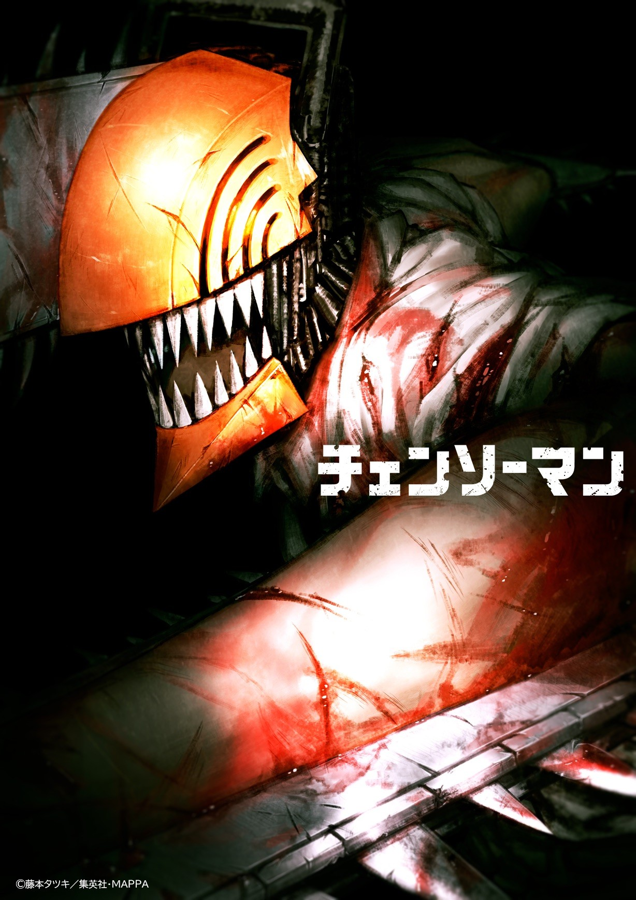

El anime Chainsaw Man revelará nuevos detalles en agosto
Durante el evento Anime Expo 2022, se llevó a cabo un panel exclusivo para una sesión de preguntas y respuestas con el personal involucrado en la producción de la adaptación al anime del manga escrito e ilustrador Tatsuki Fujimoto, Chainsaw Man. Lamentablemente, no se reveló nueva información respecto al proyecto, sin embargo, Manabu Otsuka, CEO de los estudios MAPPA, mencionó que será durante la Crunchyroll Expo (que se llevará a cabo los días 5, 6 y 7 de agosto de 2022) donde se anunciarán detalles importantes para la serie.
Otsuka pidió disculpas a todos los fanáticos que esperaban noticias de esta adaptación, pero el quiere que todo “sea perfecto” al momento de mostrar nuevos avances.
Por otra parte, Fujimoto comenzó la publicación del manga Chainsaw Man en la revista Weekly Shonen Jump de la editorial Shueisha en diciembre de 2018, finalizando la primera parte en diciembre de 2020. El undécimo volumen dio fin a la primera parte de la obra, y la continuación todavía está en proceso. El manga contará con una adaptación a serie de anime, misma que será producida por los estudios MAPPA y cuyo estreno está programado para el año 2022 en Japón.
Sinopsis de Chainsaw Man
La historia se desarrolla en un mundo en el que los Demonios amenazan la paz de los humanos, lo que los convierte en objetivos a eliminar. Denji es un joven y deprimido hombre que ha vendido varios de sus órganos y que trabaja como leñador y cazador de demonios para pagar la deuda de su difunto padre. Denji posee un perro (que además es un demonio) llamado Pochita, que cuenta con motosierras y que utiliza para realizar su trabajo.
Esto es explicado porque los humanos pueden realizar contratos con los demonios. Después de regresar a casa de un trabajo, Denji es llamado por un Yakuza para infiltrarse en un edificio y asesinar a otro demonio. No obstante, el plan era una trampa para asesinarlo como parte de un contrato de los Yakuza con el demonio, obteniendo estos más poder. Pero Pochita acude al auxilio de Denji y se une con él, convirtiéndose en un mitad hombre mitad demonio y adquiriendo las motosierras de Pochita.